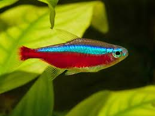

Paracheirodon axelrodi is known for being one of the most stunning schooling fish in the aquarium trade. Its common name refers to the very prominent, cardinal red stripe running horizontally down its body, which is paired with an iridescent blue stripe that is visible even when the fish tank lights are off. Personality-wise, they can be a little shy if you suddenly walk in front of the tank, but they are quick to come out of hiding, especially if you have a large school of them.
As the name suggests, Amazon sword plants originates from the Amazon river basin, and is a very popular freshwater aquarium plant sold worldwide. This resilient plant is easy to maintain, which is why it is great for beginners. It serves as a background plant in aquariums when planted in solitary. When planted with other plant species, it creates a thick green forest like foliage that enhances the aesthetic appeal of aquariums.
As the name suggests, Java moss is a moss that originated in Southeast Asia, and is widely used in freshwater aquariums around the world. Java moss is least demanding and is easily adaptable to all kinds of water. It is thus very popular as a beginner’s plant for aquariums. The growth of Java moss is fast and dense like a carpet. It is a beautiful addition to aquariums of all sizes. Although maintaining Java moss carpet is easy and fuss-free, care must be taken while anchoring it in the aquarium, as the surface must be flat, textured and should not float. Driftwood, stones, rocks etc., are great options for anchorage.
